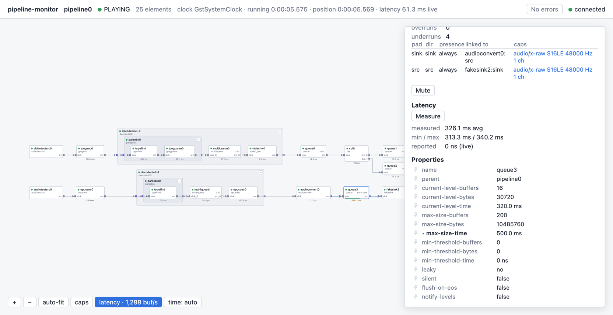

Łukasz Huńczak
I help companies design, build and debug real‑time media systems.
Software architect and engineer specializing in multimedia systems using C++, GStreamer, FFmpeg, WebRTC and Qt.
Get in touchServices
-
Media architecture
Design of media systems, from capture and processing to streaming and playback.
-
Real-time media pipelines
GStreamer and FFmpeg pipelines for live video and audio.
-
Custom GStreamer elements
Writing new elements and plugins in C and C++.
-
Live streaming
WebRTC and low-latency streaming.
-
A/V synchronization
Timing analysis and fixing sync, drift and latency problems.
-
Video and audio codecs
Writing codec elements, and integrating and tuning video and audio codecs.
-
Debugging and issue analysis
Finding the root cause of crashes, stalls, leaks and glitches, and fixing them.
-
Performance optimization
Profiling and speeding up C++ media code on Linux, macOS and Windows.
Product
pipeline-monitor
See a running GStreamer pipeline live in your browser.
A GStreamer tracer plugin: enable it with one environment variable, without changing your application.
- The pipeline as a live graph, with errors, warnings and caps
- Live values on any pad, queue fill and latency
- Free under the LGPL; commercial license and support available
